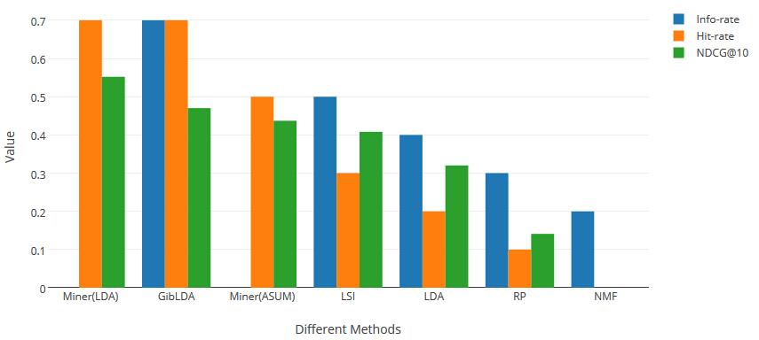
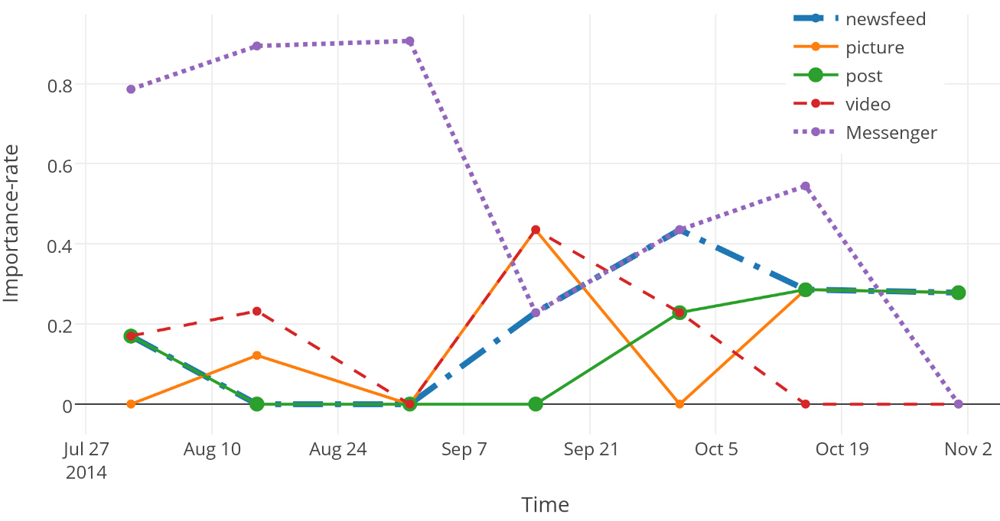

AR-Tracker: Track the Dynamics of Mobile Apps via User Review Mining
Cuiyun Gao, Hui Xu, Junjie Hu, Yangfan Zhou.Introduction
User-generated reviews on mobile applications (apps) are a valuable source of data for developers to improve the quality of their apps. But the reviews are usually massive in size and span over multiple topics, thus leading to great challenges for developers to efficiently identify the key reviews of interest. In recent studies, automatic user review mining has been recognized as a key solution to address this challenge. The existing methods, however, require extensive human efforts to manually label the training data. Besides, they only analyze the static characteristics over the whole set of collected reviews, while ignoring the dynamic information embedded in the reviews of different time periods. In this paper, we propose `AR-Tracker', a new framework to mine user reviews without the need of human labeling and track the dynamics from the top-ranked reviews. Through extensive experiments on the reviews of four popular mobile apps collected over 7 months, we show that AR-Tracker can still achieve comparable accuracy with the state-of-the-art methods, e.g., AR-Miner. Additionally, a case study on Facebook reviews further validates the effectiveness of `AR-Tracker' in tracking the dynamics.Read more about our paper: [Paper]
Experiments
Comparison of Different Methods Based on the Same Dataset as [AR-Mier]
 Dynamics of Topical Issues
 Info-rates of Different Apps Over Time